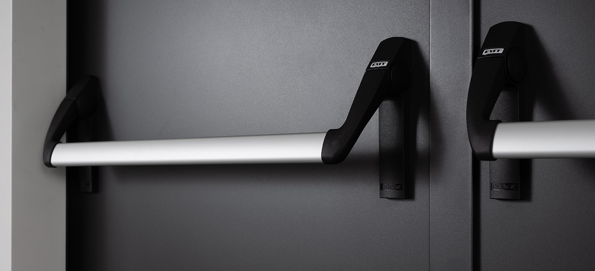

Ninz > Univer Serisi

Ninz Univer serisi, inşaat projelerinde en sık karşılaşılan "kapı yönü" sorununu ortadan kaldıran devrim niteliğinde bir yangın kapısıdır. Reversible (Yönü Değişebilir) yapısı sayesinde, kapının sağ veya sol açılım olması montaj sırasında belirlenebilir.
Galvanizli çelik sacdan üretilen Univer, tam dolu kanat yapısı ve ısı ile genleşen fitilleri sayesinde yangın anında alev ve duman geçişini 60 dakika (EI2 60) boyunca engeller.
Sağ/Sol ayrımı montajda yapılır.
Paslanmaya karşı tam koruma.
60 Dakika Sertifikalı Dayanım.